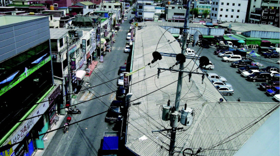

|
 |
|||
|
|
<2006 석수시장 프로젝트> 프리뷰(4월 26일자_계속해서 조금씩 바뀝니다)
바야흐로 5.31 지방선거와 2006 독일월드컵을 앞두고 한국사회가 술렁이고 있다. 어수선한 가운데 안양 석수동에서는 알송달송한 명함이 뿌려지고 있다. 시장 거리에서 상점을 돌아다니며 깍듯이 인사를 하고 명함을 건내는 사람을 만났다. 들여다보니 그것은 ‘생활 속 예술에 한 표를!’이라 적힌 <석수시장 프로젝트>홍보명함이었다. <석수시장 프로젝트>를 기획한 이명훈 큐레이터는 “석수시장 프로젝트도 생활 속 공공미술이라는 슬로건을 걸고 석수동 지역에 기호 0번으로 출사표를 던진 당당한 후보자인 셈”이라고 말한다. 또 이 씨는 이번 기회에 정치와 예술의 관계나 정치인들 스스로 지역발전을 위한 공약에서 문화적 대안을 제시해야 한다고 덧붙인다. 정치인의 명함을 차용하여 제작한 석수시장 프로젝트의 홍보명함은 여러 가지로 절묘하다. 우선 명함에 사용된 이미지는 엽기적인(?) 사진이 걸린 화장실이다. 정치(인)를 조롱하는 것도 같고 변기를 작품으로 출품한 뒤샹의 스캔들처럼 기존의 예술을 부정하는 것으로도 읽힌다. 뒷면은 정치인 명함에서의 (선거)공약의 나열과 같이 석수시장프로젝트의 공약이라 할 수 있는 행사 프로그램을 제시하고 있다. <석수시장 프로젝트>의 공약 살펴보기 석수시장 프로젝트는 석수시장 문화적 활성화에 관한 연구라 할 수 있다. 예술의 일상성, 지역성, 공공성을 중심으로 석수시장 지역을 탐색하고 예술적 대안을 모색하는 프로젝트이다. 공동체적 미덕이 차츰 상실해 가고 있는 시대에 재래시장의 침체문제는 서민경제의 몰락이라는 문제의식에 앞서 근본적으로 전통문화와 지역문화, 서민문화를 담지하고 있는 소지역의 열린 문화공간의 상실이라는 관점에서 재고할 필요가 있다. 지난 프로젝트가 <오픈 더 도어 open the door!>라는 개념으로 시장의 빈 점포들이 어떻게 예술 공간으로 활용될 수 있는지를 보여주었다면, 올해 프로젝트는 <가가호호 家家戶戶> 개념으로 예술이 어떻게 일상의 수다꺼리가 될 수 있는지, 석수시장에서 예술과 일상이 어떻게 결합되고 교환 소통 되는지 연구하게 된다. 석수시장 프로젝트의 공약의 내용은 크게 전시와 관객 참여 프로그램으로 구분된다. 전시는 스톤앤워터에서, 관객 참여 프로그램은 ‘공공의 수-다방’이라고 이름 붙여진 거리밀착 공간에서 이루어진다. 전시는 석수시장에서 만들어진 예술작품을 의미하는 <메이드 인 석수시장 made in Seoksu-Market>전과 스톤앤워터의 활동을 한 눈에 살필 수 있는 <since 2002> 아카이브 전시와 옥상을 문화공간으로 탈바꿈 시키는 <바람 부는 옥상>전으로 나뉜다. <메이드 인 석수시장> 전시는 개관전 <리빙퍼니처>전을 뒤집는다. 둘 다 같은 생활 속의 예술을 표방하지만 <리빙퍼니처>전이 예술가들의 오브제(예술작품)로 생활공간을 연출했다면, 이 전시는 반대로 일상적인 오브제, 혹은 레디메이드(ready-made)들로 전시장이 채워진다. 작가는 버려진 가구, 생활용품, 재활용 쓰레기, 주민들의 발명품과 같은 일상의 오브제를 수집하고 ‘선택’하여 예술작품으로 새로운 시각이미지를 만들어 낸다. 일상과 예술의 구분을 모호하게 하는 오브제들이다. 뒤샹의 ‘레디메이드’ 스캔들이 일으킨 미술사적 맥락을 가져오면서 석수동의 생활사 박물관이 되기도 하는 전시이다. 이 전시의 참여자 윤현옥, 김월식, 박찬응 3인은 ‘작가’ 대신 ‘넝마주의’ 개념으로 대체된다. 예술넝마주의는 컬렉터인 동시에 변형자, 발명가라고 할 수 있다. 큐레이터와 작가가 합쳐진 신개념이다. 스톤앤워터 내부 한편에서는 <since 2002>가 펼쳐진다. 2002년은 석수시장에 스톤앤워터가 개관한 해이다. 석수동의 이름을 딴 스톤앤워터는 ‘보충대리공간 supplement space’ 이란 이름으로 생활 속에서 결핍과 부재를 찾아내 예술로 보충하고 대리하고자 했다. '생활 속 예술공간'을 표방하고 저자거리로 나온 스톤앤워터로 예술가들이 찾아 들기 시작했다. 그들은 시장과 마을을 관찰하고 안양천을 산책하기도 하면서 석수동이라는 특정 지역의 삶의 풍경, 조건을 다양한 형태와 방법으로 기록했다. 또한 그들은 평범한 일상과 특정 장소에서 예술적 영감을 얻고자 했다. 그들은 미술전시, 프로젝트, 이벤트를 기획하고 준비하여 관객을 만났다. 만 4년이란 시간동안 스톤앤워터는 다양한 동시대 미술을 소개하는 전시공간으로써, 지역연구공간으로써, 어렵게 다가오는 현대미술을 감각하고 체험하는 교육예술공간으로써 생활 혹은 일상과 멀어진 예술을 다시 생활 속으로 돌아오게 하기 위해, 서울 중심의 문화로부터 지역(변방 곳곳의)문화를 만들기 위해 생활과 예술을, 지역민과 예술가들을 꾸준히 접속시켜왔다. 그러나 모든 접속이 원할 했던 것은 아니었다. 어떤 접속에서는 예상치 못했던 에러가 발생했고, 또는 기대했던 효과가 나타나지 않았고, 또 어떤 경우에는 재부팅을 해서 다시 시작해야 하기도 했다. 스톤앤워터의 활동자료들이 펼쳐지고 관련 사진들이 프로젝션 되는 <since 2002> 전시를 통해 스톤앤워터의 정체성과 예술과 일상의 접속의 사례와 모델을 살펴 볼 수 있을 것이다. 스톤앤워터 옥상에서는 <바람 부는 옥상>전이 열린다. 대게 옥상은 폐쇄되거나 방치되거나 혹은 빨래를 말리는 장소 정도로만 사용된다. 잠시 바람을 맞으러 옥상을 찾는다. 좀더 높은 곳에 올라 풍경을 조망하면서 마음을 가라앉힐 수 있는 휴식장소이기도 하다. <바람 부는 옥상>전은 석수시장과 인근 자연풍경을 조망하면서 잠시 휴식을 취할 수 있는 괜찮은 장소이다. 관객은 작가 이현열의 산수벽화가 펼쳐진 계단을 올라 공연연출 박혜강 씨의 거미극장으로 입장한다. 거미극장은 기존의 >반원형 천막 설치구조물에 색색의 실과 끈으로 이루어진 거미집 모양의 극장이다. 박혜강 씨는 이번 프로젝트에서는 극장 설치만을 작업하고 이후 이 극장을 활용해 퍼포먼스나 작은 연극들을 펼칠 계획이다. 시장 속 커뮤니케이션 공간, <공공의 수-다방> 오픈 스톤앤워터를 빠져나와 조금 이동하다보면 삼거리에 <시장 속 커뮤니케이션 공간 공공의 수-다방>이라는 간판이 있는 공간을 찾을 수 있다. 쇼윈도우로 내부가 개방된 8평이 남짓한 <공공의 수-다방>은 지난 프로젝트 때의 <茶da방>의 연속으로 일종의 다방(茶房, cafe)이다. 다방은 만남의 공간이며, 사적인 대화와 공적인 이야기가 동시에 이루어질 수 있는 커뮤니케이션 공간이다. 이곳에는 여러 개의 테이블이 공간을 나누는 것이 아니라 단 하나의 테이블-‘공공의 테이블’로 이름 붙여진 테이블 만이 놓여있다. 붉은 색의 테이블은 흰 벽, 외부 녹색과 강렬한 대비를 이룬다. 내부에는 하나의 책장이 있다. 이 책장에는 각종 예술서적과 전시 카탈로그가 비치되어 있다. 스톤앤워터가 보관하고 있었던 책들과 자료들이다. 이 책장은 예술을 작품(오브제)이 아닌 책으로 제시하는 개념미술로 이해할 수도 있다. 수-다방의 손님들은 프로젝트 기간 중에 차를 마시며 수다를 떨 수 있고 독서를 할 수 있으며, 바로 옆 비디오 가게에서 보고 싶은 비디오를 빌려 영화를 함께 감상 할 수 있으며, 장기나 바둑을 둘 수도 있다. 특히 석수동 주민은 책장에 비치된 자료를 대출예약을 통해 프로젝트가 끝난 후 일정 기간 대출할 수도 있다. 손님을 맞이하고 안내하며 서비스를 하는 수-다방의 매니저로 작가 윤종필가, 종업원으로 김형식 씨가 참여한다. 공공의 수-다방은 공론의 장이기도 하다. 이를 위해 프로젝트 기간 중 매주 화, 목, 토요일에는 관객의 지적호기심을 채워줄 수 있는 관객 프로그램이 준비되어 있다. 화요일에는 <돈키호테의 영웅담>이란 타이틀로 3회에 걸쳐 현장 공연예술가를 토크쇼 형식으로 만날 수 있고, 목요일에는 2차에 걸쳐 <세상과 대화하는 방식-공공미술>를 주제로 유다희(공공미술 프리즘), 이광준(티팟 공동대표), 김가현(플라잉시티), 공공미술 기획자 3인을 초대해 타 지역의 다양한 공공미술 사례를 세미나 형식으로 살펴볼 수 있다. 또 토요일에는 <예술 강좌-미술 읽기>가 2회에 걸쳐 진행된다. 5월 20일에는 <<위험한 미술사>>의 저자 조이한 씨가 미술사 강의를, 5월 27일에는 <<왜 공공미술인가>>의 저자 박삼철 씨가 공공미술 이론 강의를 맡는다. 또한 공공의 수-다방의 한 쪽 벽에는 사진들이 걸린다. 사진작가의 전문사진, 작품이 아닌 평범한 사람들의 추억의 사진들이다. 사진들은 석수시장 상인과 주민들의 앨범에서 꺼내어 모아진 것이다. 개인의 앨범에서 꺼내어 진 사진들이 공공의 장에 함께 <포토 바이 퍼블릭>이란 타이틀로 전시되어 사람 사는 이야기, 석수동의 역사가 만들어 지는 것이다. 이명훈 큐레이터는 상점 곳곳을 찾아다니며, 이 프로젝트에 대해 설명하고 협조를 구해 사진을 수집하고 이야기를 정리한다. 개인의 추억이 모여 지역 공동체의 기억을 만드는 상호소통적이며 상호참조적인 작업이 될 것이다. <포토 바이 퍼블릭>은 주민 참여 프로그램의 성격이 강하다. 공공의 수-다방은 이렇듯 다방이면서, 갤러리, 도서관, 세미나, 강연, 이벤트가 벌어지는 석수시장 안의 복합문화공간이다. 또한 이 공간은 스톤앤워터를 보충하고 대리한다. 모든 프로그램은 관객과 주민에 개방되며 무료이다. 프로그램은 가급적 무겁지 않고 경쾌하게, 수다스럽게 진행시킬 계획이다. 공공미술에 대한 관심과 미술에 대한 요구는 프로젝트 기간 중에 관객설문과 주민설문 작업을 통해 계속적으로 피드백하고 앞으로의 프로젝트에 참조하게 될 것이다. 사적인 것과 공적인 것의 상호소통과 접속 문화란 인간이 살아가는 스타일을 총칭한다. 그 가운데 미술은 인간의 미적 취향을 반영한다. 좀더 삶을 아름답게 가꾸려는 욕망과 그 욕망에 충실하고자 하는 노력들은 전혀 이상할 것이 없는 것이다. 그러나 개인적 욕망이 공동체적 욕망과 접속(소통)되지 않을 때, 종종 불화가 발생한다. 개인의 자유의지도 중요하고 공동체의 집단적 의지도 중요하다. 우리 모두는 삶의 의지를 가지고 살아가는 존재, 곧 생활인이기 때문에 사생활도 중요하고 사회생활도 중요한 것이다. 석수시장프로젝트는 공과 사를 엄밀히 구분하는 것보다는 양자의 상호소통과 상호접속을 중요하게 생각한다. 여기에서 개인이란 고립된 존재가 아닌 관계를 맺는 소통적 존재이기 때문에 개인과 공동체(사회)는 분리되지 않는다고 보기 때문이다. 예술은 이러한 자칫 무기력해지고, 무미건조해지기 쉬운 일상에 생기와 윤기를 준다. 그렇다고 해서 예술은 단순한 오락만을 의미하지 않는다. 예술은 때로 우리 자신을 매우 불편하게 한다. 월드컵 거리응원의 경험처럼 일상과 예술은 거리로 나와 서로를 대면하고 응원하며, 서로를 껴안아야 한다. 이번 석수시장 프로젝트 <가가호호>는 집집마다 예술이 들어가 숨는 것이 아니고 집집마다 찾아다니며 일상을 거리로, 광장으로 끌어내는 프로젝트이다. 예술에서 공공성이란 단순한 예술가의 서비스가 아닌 말 걸기를 통한 공동의 추억을 만들어 가는 상호소통과 상호참조적인 것이라 할 수 있다. 이번에 기호 0번 석수시장 프로젝트의 공약을 검증하고 한 표의 소중한 문화 향유권을 행사해 볼 것을 권한다. (추신: 이 글은 기획자의 2006 프로젝트의 프리뷰이므로 실제 프로젝트 내용과 차이가 있을 수 있습니다. 이 텍스트는 5월 31일까지 계속적으로 하이퍼텍스화(링크)됩니다. 프로젝트 기간 중 직접 방문하여 기획자의 구상과 실제 내용을 비교해 보면서 잘된 점, 잘못 된 점을 찾아볼 것을 권합니다.) |
|||
| 웹관련문의 mhoon33@hotmail.com |보충대리공간 스톤앤워터>> |
||||